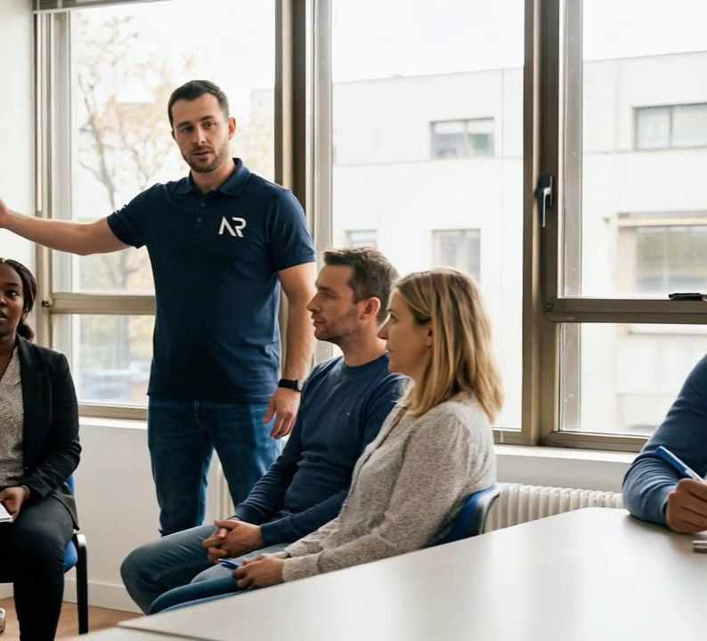

STATUT
Être inscrit à France Travail
La POEI s’adresse en priorité aux demandeurs d’emploi, indemnisés ou non. Si vous n’êtes pas encore inscrit, nous vous indiquons la marche à suivre.
Ici, on ne se forme pas « au cas où ». Chaque parcours part d’une entreprise qui cherche quelqu’un et qui s’engage à proposer un contrat à la fin de la formation. Vous apprenez les gestes du poste, avec les outils de l’entreprise, et vous êtes accompagné jusqu’au premier jour.
Comment ça marche
Tout commence par un besoin réel : un employeur qui n’arrive pas à recruter et qui accepte de former la bonne personne. Vous savez dès le départ quel poste, quelle entreprise, quel contrat à la clé.
Nous vérifions surtout votre motivation, votre disponibilité et votre mobilité. Le diplôme n’est pas le critère : c’est la formation qui comble l’écart.
Elle est écrite à partir du poste : les gestes, les outils, les situations que vous rencontrerez. Petits groupes, formateurs qui connaissent le métier, mises en situation. Vous ne payez rien : vous conservez le statut de stagiaire de la formation professionnelle, avec votre allocation chômage maintenue ou, si vous n’êtes pas indemnisé, une rémunération versée par France Travail pendant la formation.
L’employeur s’est engagé dès le départ par une promesse d’embauche auprès de France Travail : à l’issue, il vous propose le contrat prévu — CDI, CDD d’au moins six mois ou contrat saisonnier d’au moins quatre mois. Il vous a vu travailler : vous n’êtes plus un inconnu. Plus de 83 % des personnes passées par une POEI sont encore en poste six mois après (chiffre France Travail).
Pour qui
STATUT
La POEI s’adresse en priorité aux demandeurs d’emploi, indemnisés ou non. Si vous n’êtes pas encore inscrit, nous vous indiquons la marche à suivre.
PROFIL
Les prérequis sont ceux du poste visé : ils sont écrits dans chaque fiche formation et vérifiés lors de l’évaluation d’entrée.
ENGAGEMENT
Une formation courte et dense demande de l’assiduité. En contrepartie, le poste est réel et le contrat est prévu dès le départ.

Accessibilité
Dites‑le nous dès le premier contact, en toute confidentialité. Notre référent handicap étudie avec vous les adaptations possibles : rythme, supports, aménagement du poste de formation, relais vers les organismes spécialisés.
Parlons de votre poste
Dites‑nous le poste que vous n’arrivez pas à pourvoir. On vous répond franchement — y compris si la réponse est non.